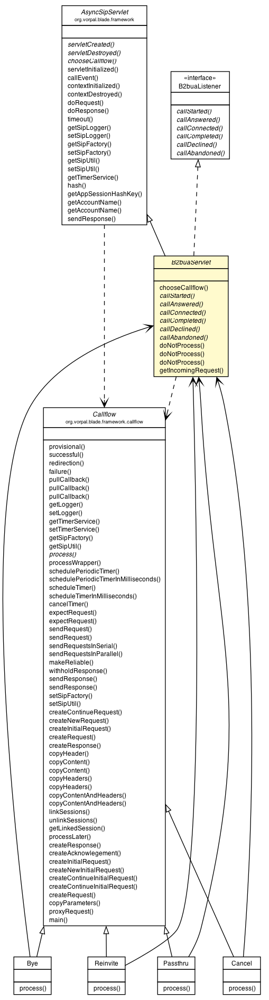

javax.servlet.GenericServlet
javax.servlet.sip.SipServlet
org.vorpal.blade.framework.AsyncSipServlet
org.vorpal.blade.framework.b2bua.B2buaServlet
javax.servlet.GenericServlet
javax.servlet.sip.SipServlet
org.vorpal.blade.framework.AsyncSipServlet
org.vorpal.blade.framework.b2bua.B2buaServlet
|
||||||||||
| PREV CLASS NEXT CLASS | FRAMES NO FRAMES | |||||||||
| SUMMARY: NESTED | FIELD | CONSTR | METHOD | DETAIL: FIELD | CONSTR | METHOD | |||||||||

java.lang.Object
public abstract class B2buaServlet
This class implements a simple back-to-back user agent. It accepts an incoming SipServletRequest object and creates an outgoing copy of it. By extending this class and overriding the B2buaListener interface methods, users can create simple routing applications by modifying the outgoing request or response objects before they are sent.
| Field Summary |
|---|
| Fields inherited from class org.vorpal.blade.framework.AsyncSipServlet |
|---|
sipFactory, sipLogger, sipUtil, timerService |
| Fields inherited from class javax.servlet.sip.SipServlet |
|---|
DNS_RESOLVER, OUTBOUND_ADDRESSES, OUTBOUND_INTERFACES, PRACK_SUPPORTED, SIP_APPLICATIONSESSION_CREATE, SIP_APPLICATIONSESSION_ID, SIP_APPLICATIONSESSION_KEY, SIP_FACTORY, SIP_SESSIONS_UTIL, SUPPORTED, SUPPORTED_RFCs, TIMER_SERVICE |
| Constructor Summary | |
|---|---|
B2buaServlet()
|
|
| Method Summary | |
|---|---|
abstract void |
callAbandoned(SipServletRequest outboundRequest)
This method is called in response to receiving a CANCEL request. |
abstract void |
callAnswered(SipServletResponse outboundResponse)
Called after a 200 OK is received. |
abstract void |
callCompleted(SipServletRequest outboundRequest)
This method is called after receiving a BYE request. |
abstract void |
callConnected(SipServletRequest outboundRequest)
This method is called after the ACK for the initial INVITE is received. |
abstract void |
callDeclined(SipServletResponse outboundResponse)
This method is called after receiving an error status (like 404). |
abstract void |
callStarted(SipServletRequest outboundRequest)
Called upon an initial INVITE. |
protected Callflow |
chooseCallflow(SipServletRequest inboundRequest)
Implement this method to choose various Callflow objects for incoming requests that do not already have a callflow defined. |
void |
doNotProcess(SipServletRequest outboundRequest)
Tells the B2buaServlet not to send the outbound request. |
void |
doNotProcess(SipServletRequest outboundRequest,
int statusCode)
Tells the B2buaServlet not to send the outbound request and send a reply back upstream with the supplied status code. |
void |
doNotProcess(SipServletRequest outboundRequest,
int statusCode,
String reasonPhrase)
Tells the B2buaServlet not to send the outbound request and send a reply back upstream with the supplied status code and custom reason phrase. |
SipServletRequest |
getIncomingRequest(SipServletRequest outboundRequest)
Returns the original incoming request which initiated the callStarted method. |
| Methods inherited from class org.vorpal.blade.framework.AsyncSipServlet |
|---|
callEvent, contextDestroyed, contextInitialized, doRequest, doResponse, getAccountName, getAccountName, getAppSessionHashKey, getSipFactory, getSipLogger, getSipUtil, getTimerService, hash, sendResponse, servletCreated, servletDestroyed, servletInitialized, setSipFactory, setSipLogger, setSipUtil, timeout |
| Methods inherited from class javax.servlet.sip.SipServlet |
|---|
doAck, doBranchResponse, doBye, doCancel, doErrorResponse, doInfo, doInvite, doMessage, doNotify, doOptions, doPrack, doProvisionalResponse, doPublish, doRedirectResponse, doRefer, doRegister, doSubscribe, doSuccessResponse, doUpdate, log, log, service |
| Methods inherited from class javax.servlet.GenericServlet |
|---|
destroy, getInitParameter, getInitParameterNames, getServletConfig, getServletContext, getServletInfo, getServletName, init, init |
| Methods inherited from class java.lang.Object |
|---|
clone, equals, finalize, getClass, hashCode, notify, notifyAll, toString, wait, wait, wait |
| Constructor Detail |
|---|
public B2buaServlet()
| Method Detail |
|---|
protected Callflow chooseCallflow(SipServletRequest inboundRequest)
throws ServletException,
IOException
AsyncSipServlet
chooseCallflow in class AsyncSipServletServletException
IOException
public abstract void callStarted(SipServletRequest outboundRequest)
throws ServletException,
IOException
B2buaListener
callStarted in interface B2buaListeneroutboundRequest - copy of the initial INVITE to be modified before sending
ServletException - an exception
IOException - an exception
public abstract void callAnswered(SipServletResponse outboundResponse)
throws ServletException,
IOException
B2buaListener
callAnswered in interface B2buaListeneroutboundResponse - modifiable successful response object
ServletException - an exception
IOException - an exception
public abstract void callConnected(SipServletRequest outboundRequest)
throws ServletException,
IOException
B2buaListener
callConnected in interface B2buaListeneroutboundRequest - a modifiable ACK request
ServletException - an exception
IOException - an exception
public abstract void callCompleted(SipServletRequest outboundRequest)
throws ServletException,
IOException
B2buaListener
callCompleted in interface B2buaListeneroutboundRequest - a modifiable BYE request
ServletException - an exception
IOException - an exception
public abstract void callDeclined(SipServletResponse outboundResponse)
throws ServletException,
IOException
B2buaListener
callDeclined in interface B2buaListeneroutboundResponse - a modifiable error response.
ServletException - an exception
IOException - an exception
public abstract void callAbandoned(SipServletRequest outboundRequest)
throws ServletException,
IOException
B2buaListener
callAbandoned in interface B2buaListeneroutboundRequest - a modifiable CANCEL request
ServletException - an exception
IOException - an exceptionpublic void doNotProcess(SipServletRequest outboundRequest)
outboundRequest -
public void doNotProcess(SipServletRequest outboundRequest,
int statusCode)
throws ServletException,
IOException
outboundRequest - statusCode -
ServletException
IOException
public void doNotProcess(SipServletRequest outboundRequest,
int statusCode,
String reasonPhrase)
throws ServletException,
IOException
outboundRequest - statusCode - reasonPhrase -
ServletException
IOExceptionpublic SipServletRequest getIncomingRequest(SipServletRequest outboundRequest)
outboundRequest -
|
||||||||||
| PREV CLASS NEXT CLASS | FRAMES NO FRAMES | |||||||||
| SUMMARY: NESTED | FIELD | CONSTR | METHOD | DETAIL: FIELD | CONSTR | METHOD | |||||||||